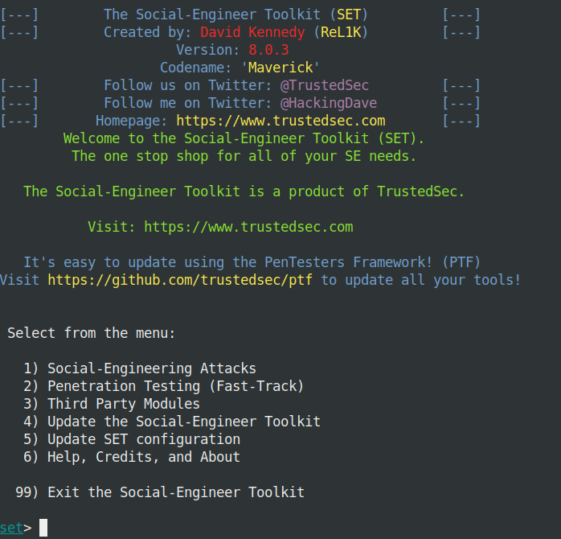

Social Engineering Toolkit (SET) is software developed by TrustedSec and written by David Kennedy in python. It is open-source and cross-platform and offers a choice of functions that allow various attacks based on computer phishing. We thus find a tool for copying web pages containing forms (Facebook, bank site, etc.), a mail-bombing tool for spamming mailboxes or phone numbers, but also RAT management systems. or exploit using the Metasploit framework.
